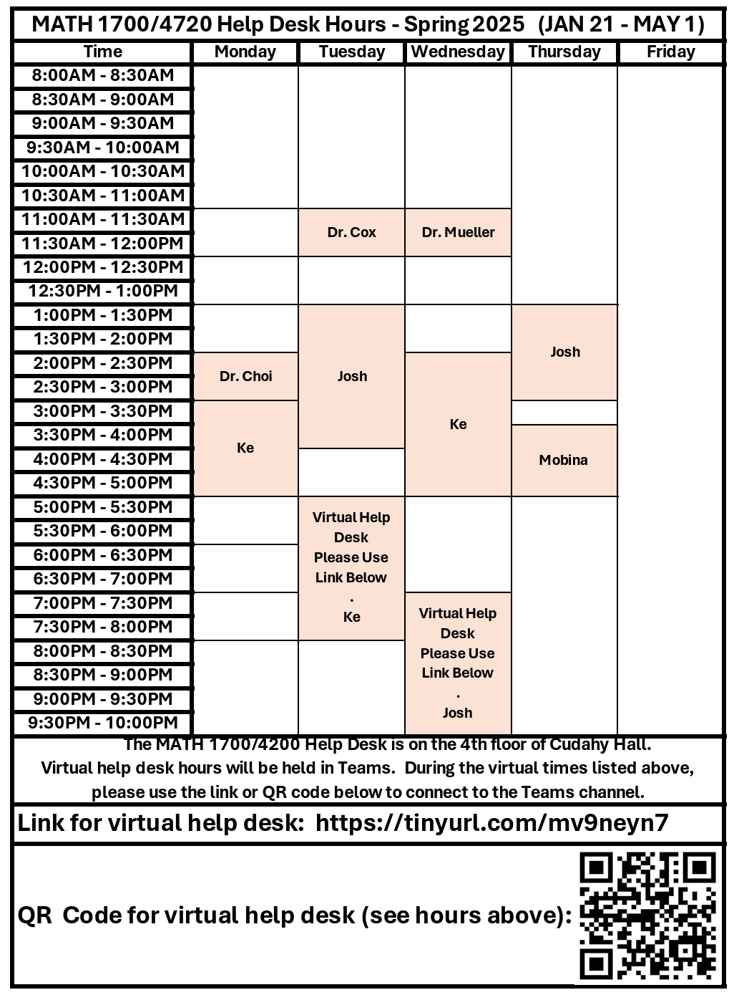
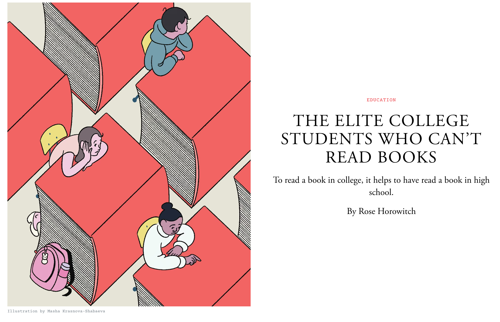
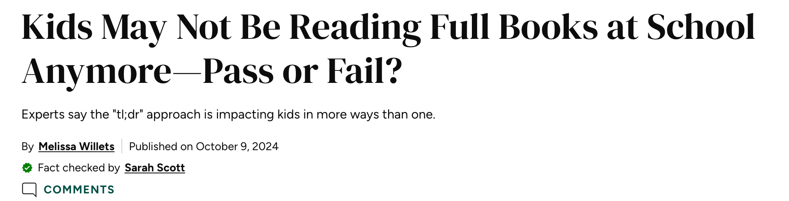
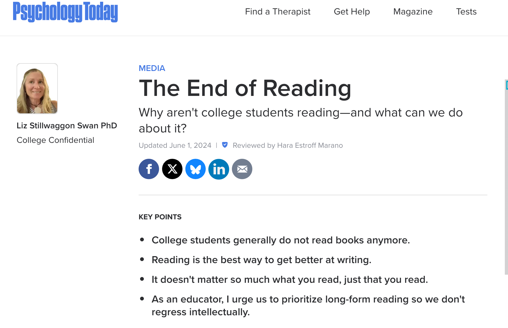

Welcome Aboard 🙌
MATH 4720/MSSC 5720 Introduction to Statistics
Taipei, Taiwan
- Hello everyone, how are you? I hope you have a great summer. Welcome to 4720 Introduction to Statistics course. I am your instructor Cheng-Han Yu.
- First thing first. Get to know each other. Let me first introduce myself. I was born and grew up in Taipei, Taiwan, my home country, which is a island right next to China. Taipei is a big city in terms of population. It is about the same population size as Chicago. This building is called Taipei 101, which is the tallest building in Taiwan.
My Journey
- Assistant Professor (2020/08 - )
- Postdoctoral Fellow
- PhD in Statistics

- MA in Economics/PhD program in Statistics
After college, working and doing military service for several years, I came to the US for my PhD degree. Originally I would like to study economics, but then I switched my major to statistics. - I got my master degree in economics from Indiana University Bloomington, then I transferred to UC Santa Cruz to finish my PhD studies. - Then I spent two years doing my postdoctoral research at Rice University in Houston, Texas. - Finally, in fall 2020, I came to Marquette being an assistant professor. - Midwest/Indiana-West/California-South/Texas-Midwest/Wisconsin - Been to any one of these universities/cities? - The most beautiful campus. - Who are international students? I can totally understand how hard studying and living in another country. Feel free to share your stories or difficulties, and I am more than happy to help you if you have any questions. - Poor listening and speaking skills. I was shy. - Usually if it is a class less than 30 students, I’d like to ask students to briefly introduce themselves, but this semester we have a big class, bear with me if I can’t recognize you.
How to Reach Me
Office hours TuTh 4:50 - 5:50 PM and We 12 - 1 PM in Cudahy Hall 353.
-
- Answer your question within 24 hours.
- Expect a reply on Monday if shoot me a message on weekends.
- Start your subject line with [math4720] or [mssc5720] followed by a clear description of your question.

- I will NOT reply your e-mail if … Check the email policy in the syllabus!
TA Information
Statistics PhD student Qishi Zhan
Help desk hours: To be announced.
Welcome to set up a meeting with your TA via Teams.
Let me know if you need any other help! 😄
Help Desk Hours
Unfortunately, no TA for this course. 😢
Help desk hours on the 4th floor of Cudahy Hall.
The hours will be released later.

Course Materials
- Course Website - https://math4720-f26.github.io/website/
- All course materials and information can be found on this website. Bookmark it!
Textbook (Really?!)



It does not mean we don’t learn anymore. In fact, we learn and study in a different way. Watch videos, taking online short courses, read online tutorials or blogs.
Textbook (Dr. Yu’s Online Book)
Introduction to Statistics, by Cheng-Han Yu
Full detailed explanation of course slides 😎
Nowadays, students don’t read books!
For this course, I don’t think you need to buy any textbook.
One book you may be interested is my online book.Introduction to Statistics that provide full detailed explanation of course slides, and other topics that re not covered in this course.
So if you find it difficult to understand the course slides, you are welcome to read the book.
Learning Management System (D2L)
Submit your work: Assessments > Dropbox
Check your grade: Assessments > Grades
New announcement: News
Grading Policy ✨
| Category | Weight |
|---|---|
| 8 Homework sets | 10% |
| 4 Quizzes | 20% |
| 2 Exams | 50% |
| ~10 Worksheets | 10% |
| ~3 Group Activities | 10% |
❌ No extra credit projects/homework/exam to compensate for a poor grade.
Individual grade will NOT be curved.
Grade-Percentage Conversion ✨
The final grade is based on your earned percentage and the grade-percentage conversion Table.
\([x, y)\) means greater than or equal to \(x\) and less than \(y\).
| Grade | Percentage |
|---|---|
| A | [94, 100] |
| A- | [90, 94) |
| B+ | [87, 90) |
| B | [83, 87) |
| B- | [80, 83) |
| C+ | [77, 80) |
| C | [73, 77) |
| C- | [70, 73) |
| D+ | [65, 70) |
| D | [60, 65) |
| F | [0, 60) |
Homework (10%)
Assessments > Dropbox and upload your homework in PDF format.
There are 8 homework sets.
Every homework is due by Friday 11:59 PM (Don’t miss it. This is a hard deadline❗).
MSSC 5720 students may have more or different homework questions.
Homework is graded as complete or incomplete. Each incomplete set results in a 2% deduction from your overall grade.
❌ No make-up homework.
- Using generative AI (GenAI) tools is allowed, but you must carefully disclose your usage.
Quizzes (20%)
There are 4 in-class 15-min quizzes.
Each quiz is worth 5% of your overall grade.
📚 Quizzes are individual and in closed-book and no-tech format, except for a calculator.
❌ No cheat sheets or GenAI are allowed.
❌ No make-up quizzes for any reason unless you got an excused absence. Check the syllabus for more details.
Exams (50%)
There will be two exams, one midterm and one final.
The midterm exam has in-class and take-home parts.
📄 For the in-class parts, one piece of letter size cheat sheet is allowed. It has to be turned-in with your exam.
For the take-home parts, you are allowed to use GenAI tools. However, you must carefully disclose your AI usage.
. . .
Assessments > Dropbox to submit your take-home exams in PDF format.
Midterm Exam covers Week 1 to 7.
Final Exam covers ALL course material.
- ❌ No make-up exams for any reason unless you got an excused absence.
Worksheets (10%)
Several worksheets will be distributed and completed during class sessions.
The worksheets are graded as complete or incomplete.
Each incomplete sheet results in a 1% deduction from your overall grade.
Group Activities (10%)
There are several in-class group activities
The group activities are graded as complete or incomplete.
Each incomplete activity results in a 2% deduction from your overall grade.
What Computing Language We Use?
- 📈 The best language for statistical computing!
- ✅ You may use other tools or software such as Excel, Python, Minitab, etc to do your work, but I will NOT teach any of them.
- ❌ Drop/Swap deadline: 9/8/2026. Don’t miss it!

- In this course, we will be using programming language R to learn statistics.
- To me, R is the best language for statistical computing!
- R is actually created by two statisticians for statistics.
- The R syntax for doing statistics is very clean and intuitive.
- Now, R becomes one of the main languages for doing data science and machine learning.
- So I think it’s worth learning it.
- But still that’s your choice.
- ❌ If you do NOT want to learn R, choose another section!
- Although I teach R in this course, you may use other tools or software to do your work, but I will NOT teach any of them.
Document Generative AI Use
- You may use generative AI tools such as ChatGPT to generate a draft of your work, provided that this use is documented and cited.
-
If you use GenAI, please include the followings in your submitted work:
- Why/How I used AI (prompts or questions)
- Generated output (screenshot or copy-paste excerpt)
- How I used the output
Document Generative AI Use
-
Why/How I used AI (prompts and questions)
- I asked ChatGPT to generate a histogram using R.
- Generated output (screenshot or copy-paste excerpt)

-
How I used the output
- I reviewed the suggestions, but I did not use the exact code. Instead, I change the code format and breaks value to 50.
Academic Integrity
This course expects all students to follow University and College statements on academic integrity.
- Honor Pledge and Honor Code: I recognize the importance of personal integrity in all aspects of life and work. I commit myself to truthfulness, honor, and responsibility, by which I earn the respect of others. I support the development of good character, and commit myself to uphold the highest standards of academic integrity as an important aspect of personal integrity. My commitment obliges me to conduct myself according to the Marquette University Honor Code.